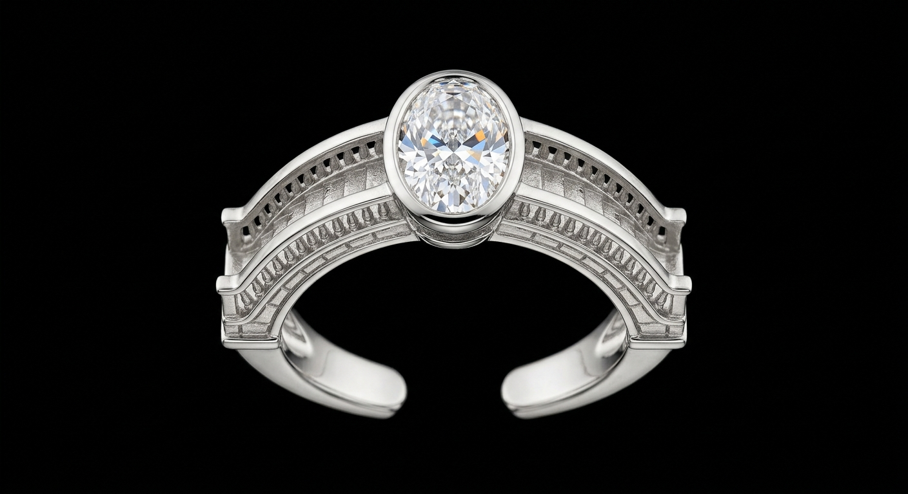
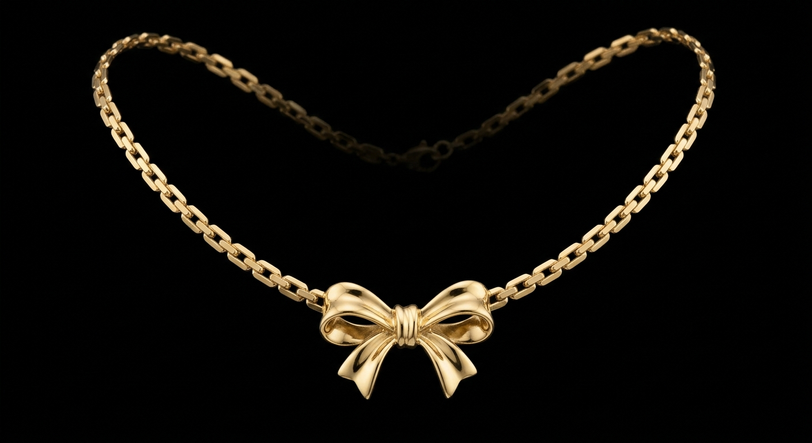
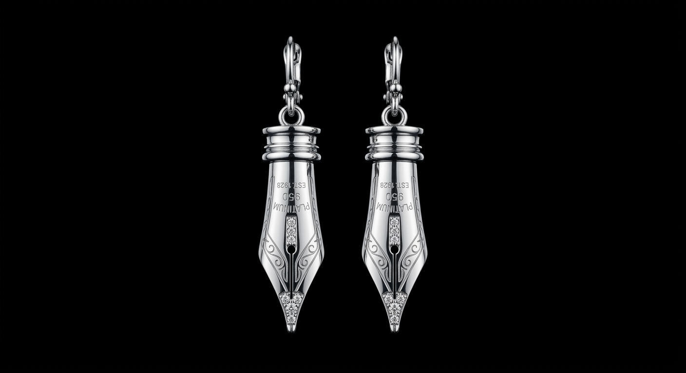
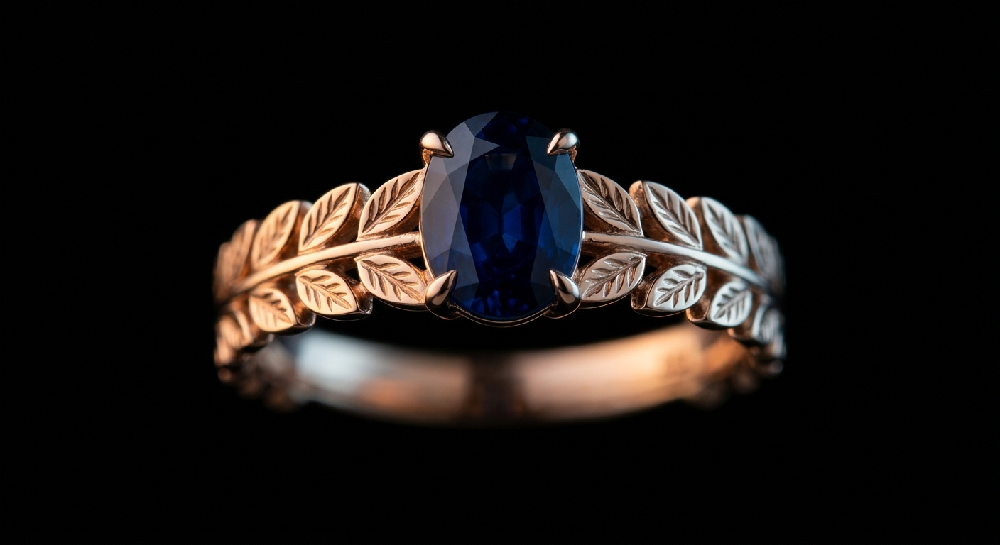
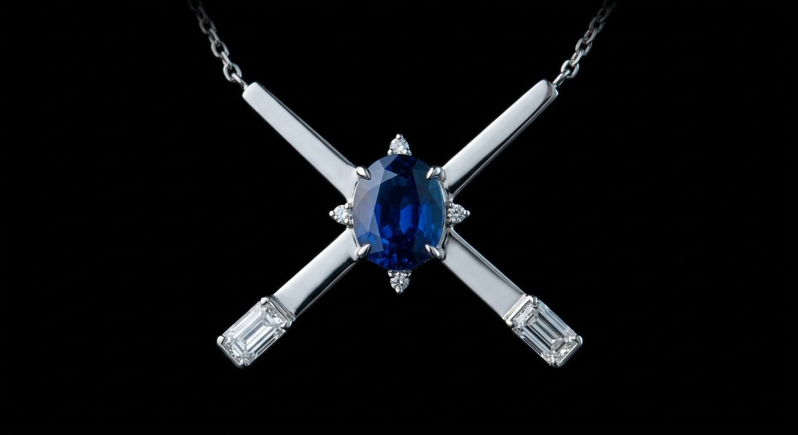
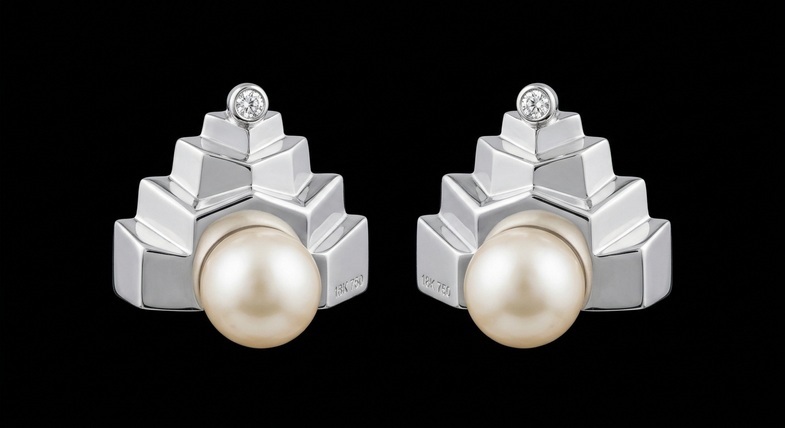

Navigli
Le arcate incise lungo la fascia richiamano i ponti che attraversano i Navigli: il diamante ovale segna il punto più alto della campata, dove la luce si raccoglie prima di scendere verso l'acqua.
Facet nasce a Milano nel 2014, da un'idea semplice quanto ostinata: che l'alta gioielleria non debba scegliere tra la resa più grande e quella più vera. Ogni pietra che entra in atelier è stata scartata almeno una volta altrove — non per un difetto, ma perché non reagiva come doveva alla luce reale, quella di una sera, non quella di un laboratorio.
Non inseguiamo la caratura più alta, ma il taglio più vivo: le proporzioni sono calcolate per massimizzare la dispersione della luce bianca in colore, il cosiddetto "fuoco" della pietra. È un lavoro che si vede solo indossato, mai su un catalogo.
Lavoriamo per commissione e su piccola serie: nessuna collezione supera i venti pezzi, e chi varca la soglia dell'atelier conosce il nome dell'artigiano che ha montato il proprio anello.
Ogni pezzo prende il nome da un luogo che ha fatto la storia di Milano — non un'etichetta, ma una geografia precisa.

Le arcate incise lungo la fascia richiamano i ponti che attraversano i Navigli: il diamante ovale segna il punto più alto della campata, dove la luce si raccoglie prima di scendere verso l'acqua.

Il fiocco chiude la catena come un nastro annodato all'ultimo momento: un dettaglio sartoriale, non un ciondolo aggiunto.

Pensati per chi cammina in fretta: leggeri al lobo, restano fermi nel movimento e si accendono solo quando serve.

Il blu profondo dello zaffiro raffredda il calore dell'oro rosa: un contrasto controllato, mai casuale.

Le quattro punte si incrociano nel punto in cui lo zaffiro cattura la luce; i baguette alle estremità chiudono il disegno come una firma.

La perla ferma la luce, il diamante la rilascia: un piccolo equilibrio ripetuto due volte, uno per orecchio.
Ogni gemma arriva in atelier grezza o già tagliata da fornitori certificati. Viene osservata sotto tre diverse temperature di luce prima di essere accettata: la resa in laboratorio dice poco su come si comporterà a cena.
Il bozzetto nasce a mano, poi viene tradotto in un modello 3D che permette di verificare pesi, ingombri e come la montatura futura lascerà respirare la pietra alla luce.
Dove la pietra lo richiede, il taglio viene rifinito internamente per massimizzarne il fuoco. La struttura in metallo viene cesellata a mano, un passaggio che nessuna fusione può replicare.
L'incastonatura è l'ultimo atto: la pietra viene fissata sotto lente, verificata in movimento — non da ferma — e il pezzo esce dall'atelier solo dopo un controllo alla luce naturale.
Ogni diamante di caratura superiore a 0,3 ct è accompagnato da certificazione del Gemological Institute of America, indipendente dall'atelier.
Lavoriamo solo con fornitori che aderiscono al Kimberley Process e che documentano la filiera dalla miniera al taglio, pietra per pietra.
Ogni montatura è coperta da garanzia a vita su difetti strutturali, con manutenzione e ripulitura offerte una volta l'anno in boutique.
Facet non vende online. Ogni pezzo si prova, si discute ed eventualmente si modifica prima di essere consegnato — un processo che richiede una stanza, non un carrello.
Lasciateci un contatto: vi risponderemo entro 48 ore per fissare un appuntamento in atelier, a Milano, o una call conoscitiva se preferite iniziare da lì.
— Richiesta ricevuta. Vi contatteremo entro 48 ore.